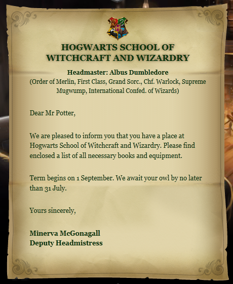

There are many number of classes taught at Hogwarts School of Witchcraft and Wizardry. Each Student has to first complete the core curriculam and then choose electives that become available from their third year and up. In the fifth year of the student, the student must take their Ordinary Wizarding Test (O.W.L.) exams and get a passing grade to continue with the program and finally take the Nastily Exhausting Wizarding Test (N.E.W.T). After the O.W.L.S, in the sixth year, students may drop some classes with the Head of the House's approval. An option for student who would like to continue and take a bulk of courses is to apply for Time-Turners.
The letter of admission to the prestigeous Hogwarts School of Witchcraft and Wizardry is sent to the witches and wizards born in Britain before their first year. A magical quill writes down the name of every magical child born in Britian with the date and time of their birth. This way letters are sent out to all the magical time at the right time. If you have been admitted then you will receive a letter that looks like this:
